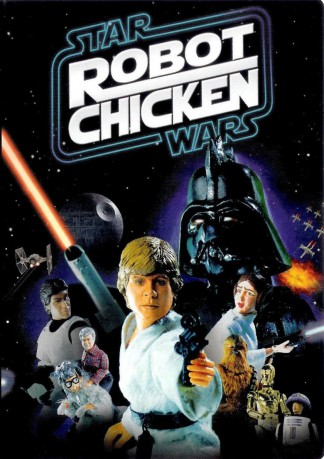
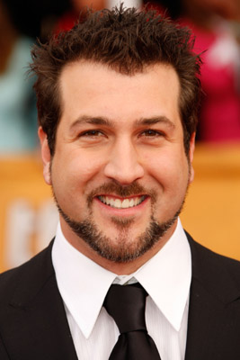
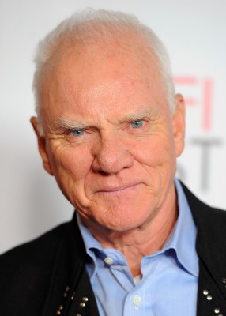

#10212 Robot Chicken: Star Wars - Episodes I
 
 IMDB-Wertung: 8.1 / 10
IMDB-Wertung: 8.1 / 10  Metascore: 0
Metascore: 0 
Es war einmal vor nicht allzu langer Zeit in einer nicht weit genug entfernten Galaxie...\r In einer Million Jahren, wenn Sokrates, Shakespeare und die Bibel lange vergessen sind, werden nur zwei große Werke in Erinnerung bleiben: Die epische Kino-Saga Star Wars und Adult Swims preisgekrönte State-of-the-art Stop-Motion-Animations-Satire Robot Chicken. Ein etwas ungewöhnliches Wiedersehen mit den Helden der Star Wars - Filme - ungeschnitten und unzensiert - so wie es eben wirklich war.
Jahr: 2007
Dauer: 21 Minuten
FSK: 12
Land: USA Studio: Adult SwimTonspuren: DD2.0 - ,
Untertitel:
Auflösung: 1080p (1440x1080) Größe: 655 MB
Genre: Sci-Fi, Komödie, Animation/Trick, Kurzfilm
Regisseur:  Seth Green
Seth Green
Drehbuch: Douglas Goldstein, Tom Root, Seth Green, Jordan Allen-Dutton, Mike Fasolo
Soundtrack: Les Claypool, Charles Fernandez, Adam Sanborne, Michael Suby
Darsteller:
 Seth Green als The Nerd / Qui-Gon Jinn / Ponda Baba / Max Rebo / Space Slug #2 / Various
Seth Green als The Nerd / Qui-Gon Jinn / Ponda Baba / Max Rebo / Space Slug #2 / Various- Candace Bailey als Princess Leia Organa / Girl / Various
 Abraham Benrubi als Darth Vader
Abraham Benrubi als Darth Vader Bob Bergen als Luke Skywalker
Bob Bergen als Luke Skywalker- Ahmed Best als Jar Jar Binks / AT-AT Driver
 Donald Faison als Dr. Evazan / Mace Windu
Donald Faison als Dr. Evazan / Mace Windu-  Joey Fatone als Himself
 Mark Hamill als Luke Skywalker (archive sound)
Mark Hamill als Luke Skywalker (archive sound)- Hulk Hogan als Abraham Lincoln (archive sound)
 Tom Kane als C-3PO
Tom Kane als C-3PO George Lucas als George Lucas
George Lucas als George Lucas Seth MacFarlane als Emperor Palpatine
Seth MacFarlane als Emperor Palpatine-  Malcolm McDowell als Orientation Instructor
 Breckin Meyer als Boba Fett / Admiral Ackbar / Janitor / Space Slug #1 / Various
Breckin Meyer als Boba Fett / Admiral Ackbar / Janitor / Space Slug #1 / Various- Dan Milano als Luke Skywalker (Empire On Ice) / Wuher / Boy
- Chad Morgan als Princess Leia Organa / Weather Girl / Laura Bush
 Conan O'Brien als Zuckuss / Ponda Baba's Boss
Conan O'Brien als Zuckuss / Ponda Baba's Boss Robert Smigel als Palpatine Parody / Ray
Robert Smigel als Palpatine Parody / Ray James Van Der Beek als Bush's Aide (archive sound)
James Van Der Beek als Bush's Aide (archive sound)- Keith Ferguson als Han Solo / C-3PO (Empire On Ice) / Imperial Probe Droid
- Adam Talbot als Han Solo (Empire On Ice) / Wampa / Jawa
- Tom Root als Mas Amedda (archive sound) (uncredited)
Datei: X:\HD-Trick-Collections\Robot Chicken Star Wars - Episodes I (2007, FSK12, 1440x1080).mkv seit 23.12.2018
Festplatte: Kinder-Filme+Trick
 Alle Filme aus Gruppe 'HD-Trick-Collections'
Alle Filme aus Gruppe 'HD-Trick-Collections'